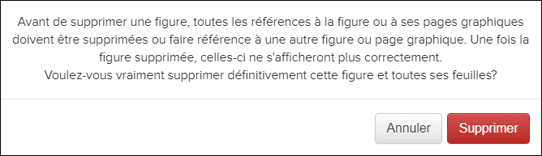
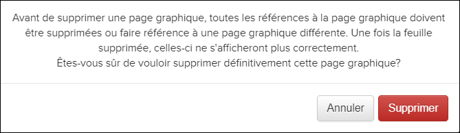

Non applicable pour Pinpoint Standalone Light.
La suppression d'une figure / feuille de figures la supprime définitivement du document. Avant de supprimer une figure / feuille de figures, vous devez supprimer toutes les pièces jointes, annotations et références à celle-ci ou les déplacer vers une autre feuille de figures / figures. Une fois que vous supprimez la figure / feuille de figures, ces éléments ne s'afficheront plus correctement.
Les utilisateurs disposant de l'autorisation Peut créer du contenu peuvent supprimer des figures et des feuilles de figures. La suppression de figures ou de feuilles est disponible à partir de la boîte de dialogue Liste des figures.
- Entrez en mode création. Faire référence à Entrer en mode de création.
- Dans l'en-tête du volet Contenu, sélectionnez l'icône
 Liste des figures.La boîte de dialogue Liste des figures apparaît. Par example:
Liste des figures.La boîte de dialogue Liste des figures apparaît. Par example:
Liste des figures Dialogue
- Dans la boîte de dialogue Liste des figures, passez
la souris sur le nom de la figure que vous souhaitez supprimer. Ces options
apparaissent:

- Cliquez sur l'icône
Supprimer la figure.Un message de confirmation apparaît:

- Cliquez sur le bouton .Remarque : Si vous choisissez de supprimer la figure, cela ne peut pas être annulé.
- Dans la boîte de dialogue Liste des figures, cliquez sur un nom de figure pour afficher les feuilles de la figure.
- Survolez le nom de la feuille de figures que vous souhaitez supprimer. Ces
options apparaissent:

- Cliquez sur l'icône
Supprimer la page graphique. Un message de
confirmation apparaît:

- Cliquez sur le bouton .Remarque : Si vous choisissez de supprimer la feuille, cela ne peut pas être annulé.